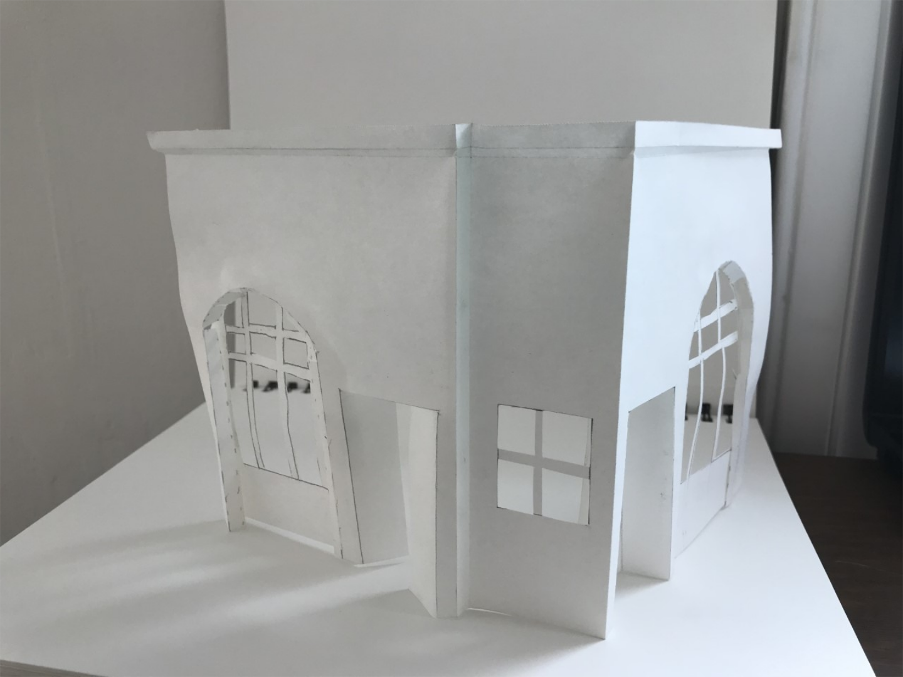
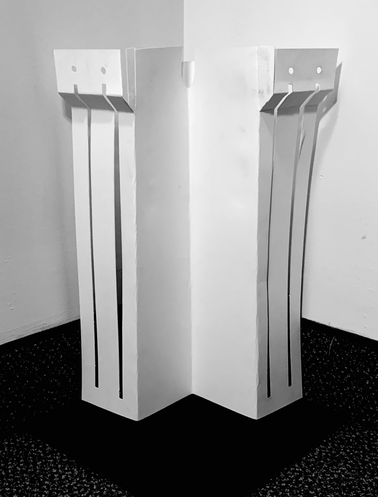
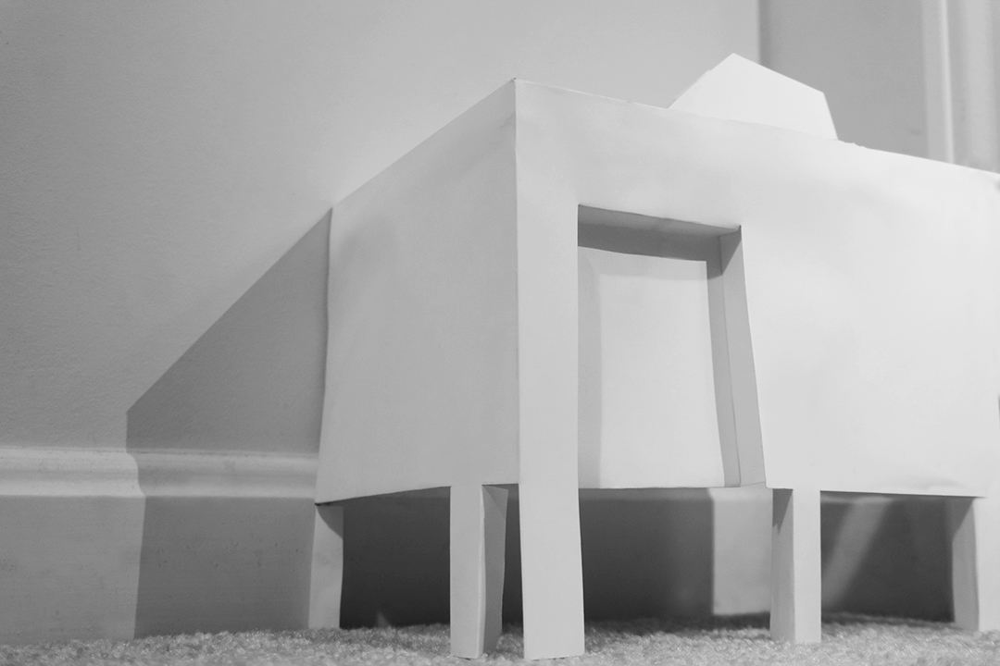

Today's Agenda
What does traditional architectural model making look like?
30 Minute Study Model - Here’s How
10 Types of Architecture Models and how to make them
Student Examples

Wirth

Miller

Uchiyama